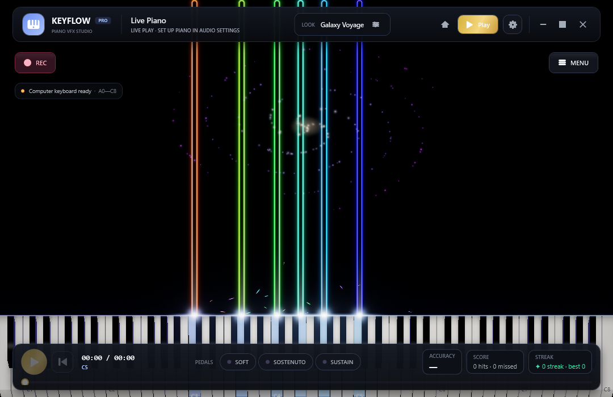
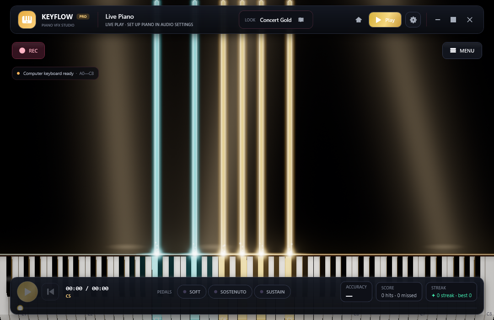
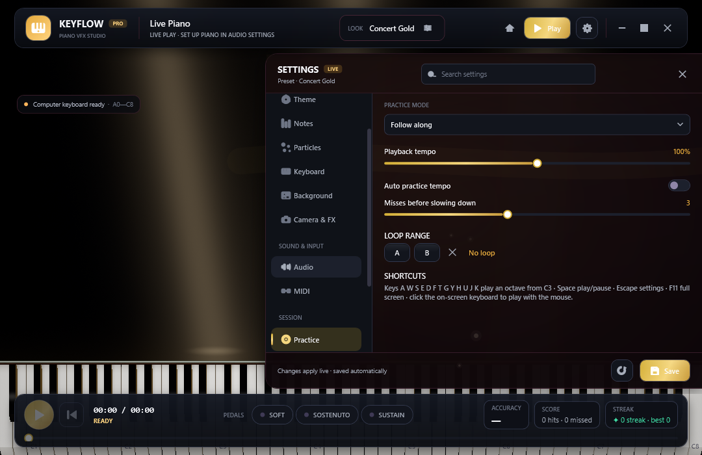
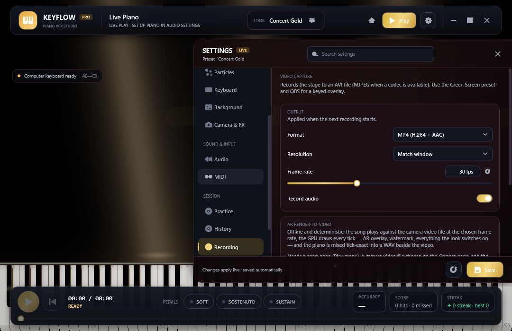
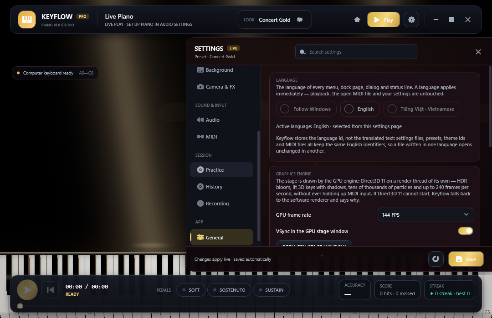

Piano performance & concert VFX studio
Your MIDI, on a concert stage.
Keyflow plays, practises and records piano video from MIDI at production quality. Notes fall in time, sparks glow hot and cool down, and an 88-key keyboard is lit by a ray-traced shader — all drawn by a Direct3D 11 engine on a thread of its own, so a heavy frame costs frame rate and never MIDI latency.
- Free · MIT licensed
- Windows 10 / 11, 64-bit
- English & Tiếng Việt, switched live
- Version 1.0.0 · Concert Grand Edition
What it does
Everything a piano video needs, in one window
Six areas, one free download. Each opens on its own page with the settings, the numbers and the pictures that belong to it.
Direct3D 11 GPU stage
Its own game loop with 16-bit HDR, multi-level bloom and up to 24,000 particles. MIDI notes reach the synth and the engine on the callback thread itself.
Learn moreRay-traced keyboard
GGX lighting, a softbox with real penumbra, contact occlusion in the key gaps and coloured light thrown back by the keys you hold.
Learn morePractice that listens
Follow along, wait for your note, practise one hand, loop A-B, slow to 50% — with accuracy, streaks, history and a ghost of your best take.
Learn moreYour instrument, your sound
A bundled Yamaha grand SoundFont, hall reverb, all three pedals, MIDI in and out, and MIDI or MusicXML scores read properly.
Learn moreRecord in one click
MP4 (H.264 + AAC) with the sound already inside, AVI, or a 32-bit PNG sequence with transparency for Premiere, Resolve and OBS.
Learn moreLooks you can share in one line
14 presets, three concert interfaces, a theme studio that derives 20 colours from five, and a share code that carries a whole look.
Learn moreAlso in the box
The details that survive daily use
Camera overlay & hand tracking
Put a webcam or a looping clip in any corner, key out green, and see which key your hand is over — classical computer vision, no model to download.
Learn moreTwo languages, live
Switch between English and Tiếng Việt without a restart: labels, dialogs, tooltips and error messages repaint in the current frame.
Learn moreScores in, looks out
MIDI formats 0/1/2, PPQ and SMPTE divisions, MusicXML with the hand split read from the staves, plus a folder library with tags.
Learn moreA staff layer on the stage
Real notation over the piano roll: key signature inferred from the song, beaming by beat, rests for the silent hand, ties across bar lines.
Learn moreUndo, profiles, autosave
32 undo states in the design dock, one file that carries stage settings plus language and interface, and every change saves itself.
Learn moreChecked by the app itself
A built-in verification suite prints PASS/FAIL per subject; the product screenshots are rendered by the app in CI, not staged mockups.
Learn moreThe stage
A concert stage that never holds up your MIDI
The stage is a Direct3D 11 engine written on Vortice.Windows, running a game loop of its own at 60, 120, 144, 240 FPS or unlimited. It owns the device and the context, so a heavy frame costs frame rate — never latency. Notes arriving from MIDI are handed to the synthesizer and to the engine on the callback thread itself, in the order they came in.
- 16-bit HDR, multi-level bloom and an ACES filmic tonemap
- Up to 24,000 particles: incandescent sparks, plasma wisps, per-note flames, impact rings, lightning
- Seven falling-trail families, hold effects, release effects and five note morphs
- Six GPU shader backgrounds and six hit-line motion styles, each with its own intensity and speed
- If Direct3D cannot start, the WPF renderer takes over and General says why

The keyboard
Eighty-eight keys, shaded like a product render
The keyboard is not a picture: it is a shader. A Cook-Torrance GGX BRDF with Smith visibility and Schlick fresnel, a softbox with a real penumbra, contact occlusion inside the gaps between keys, image-based lighting from the environment, coloured light thrown back by the keys that are sounding, and an ACES filmic tonemap.
- Classic, Studio 3D or Glass keys, with key labels, lid shadow, red felt strip and key dip
- Off / Fast / Balanced / Cinematic quality, plus key light, gloss, rim, emission, exposure and camera tilt
- On the GPU stage every slider goes straight into HLSL and is re-applied each frame
- Keys of sounding MIDI notes light up too, not only the keys you press

Practice mode
Learn a piece note by note, and keep the evidence
- Follow along, Wait for my note, Right hand only, Left hand only — the score waits for the right note
- A-B loop any passage, tempo 50–150%, and an automatic practice tempo that slows down when you miss
- Accuracy, streak and timing feedback live under the stage, scored per run
- History keeps every run, draws a fourteen-day chart and overlays your best take as a ghost
- The hand split comes from the MusicXML staves, or is inferred from how the notes spread

Recording
Press REC, and the video already has the sound
- MP4 (H.264 + AAC) written by Windows' own Media Foundation — no ffmpeg, no extra library
- AVI plus a 16-bit stereo WAV beside it, with the exact ffmpeg line printed for you
- A 32-bit PNG sequence with real transparency, for compositing in Premiere, Resolve or OBS
- Window, 720p or 1080p at 15–60 fps, taken from an off-screen frame at the recording's own size
- The Green Screen preset paints a pure green backdrop so OBS can key it out

Presets
Fourteen looks, ready before you touch a slider
Every preset also suggests the concert interface that suits it, and each one is rendered by both engines side by side in CI so the GPU stage keeps the theme's intent.
Get started
Up and playing in a minute
- DownloadTake the installer (recommended) or the portable ZIP from the latest release — nothing else to install for the self-contained build.
- Plug in, or just typeConnect a MIDI keyboard and Keyflow finds it, or play A W S E D F T G Y H U J K on the computer keyboard.
- Pick a look and press RECChoose a preset in Settings → Style, an interface in Theme, then record an MP4 with the sound already inside.
Not code-signed yet: the first launch may show Windows SmartScreen — choose “More info”, then “Run anyway”. Every release also ships SHA256SUMS.txt.
Two languages
English and Tiếng Việt, repainted in the same frame
- Switch on the General page or with the chips on the start menu — no restart, no half-translated window
- The dock search answers in both languages and in synonyms: “speed”, “tốc độ”, “fps” and “tempo” all land on the same slider
- Ids never change: preset names, theme ids, device names and saved files stay English, so a profile travels between machines
- A missing translation prints English rather than an empty box, and a static check proves both tables carry the same keys

Questions
Before you download
Is Keyflow really free?
Which computers can run it?
Do I need a MIDI keyboard?
Does the recorded MP4 contain the audio?
Why does Windows warn me the first time?
Can I use my own piano sound?
Put your music on stage
One download, every feature, two languages. Keyflow 1.0.0 for Windows 10 and 11.